1はじめに
動きで見る：名前と署名を登録する
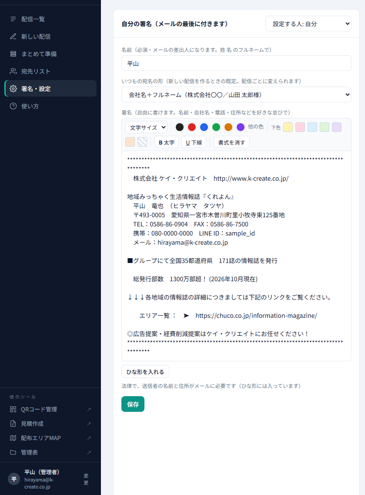
この順に押します
一斉DM管理は、自分の会社の Gmail アドレスから、お客様一人ひとりに「〇〇株式会社 〇〇様」と宛名の入ったDMをまとめて送る社内サイトです。誰が開いたか・本文のリンクを押したか・配信停止したかが記録されます。会社の Google アカウントで開いてください。
初めて開いたとき：許可する
- Google の「許可」を求める画面が出たら、自分の会社アカウントを選び、内容を確認して 「許可」 を押してください。
- 許可するのは、宛先などを保存する表・自分のメールアドレス・自分のアドレスからのメール送信・開封の記録サービスとのやりとり・自動送信の予約です。
名前と署名を登録する
名前が未登録のときは、最初に「はじめに、名前を登録してください」と出ます。名前はメールの差出人になるので、姓と名のフルネームで入れてください。続けて「署名・設定」で署名を作ります（10. 署名・宛名の形）。
2画面の見方
動きで見る：画面のどこに何があるか
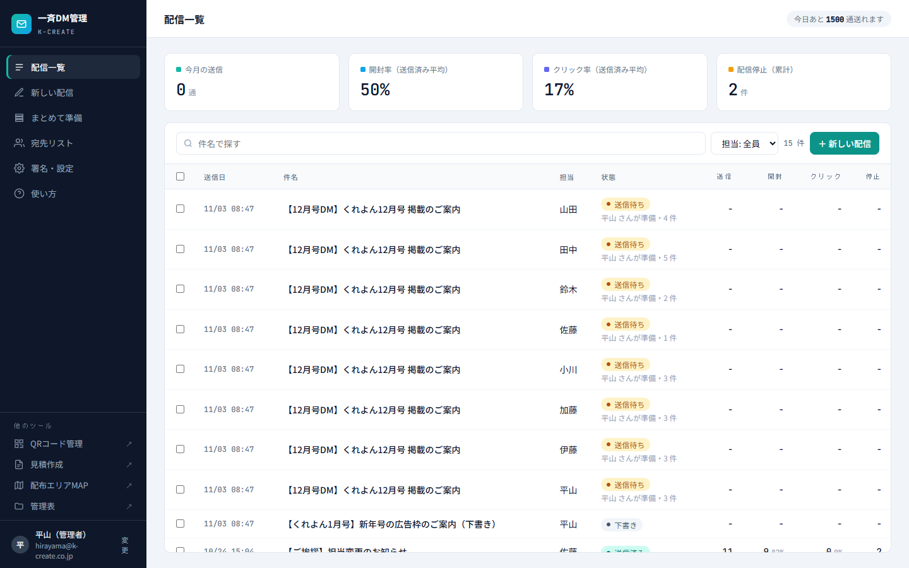
見る場所
- 左のメニュー：配信一覧／新しい配信／まとめて準備／宛先リスト／署名・設定／使い方。
- 右上の「今日あと 〇 通送れます」：自分のアカウントで今日あと何通送れるかです。Google の決まりで、1日に送れる数には上限があります。
- 配信一覧：今月の送信数・開封率・クリック率・配信停止の数と、自分の配信（下書き・送信待ち・送信中・送信済み）が並びます。
- 他のツール（左下）：QRコード管理・見積作成・配布エリアMAP・管理表を新しいタブで開きます。
| 下書き | 作りかけ。押すと続きを書けます。 |
|---|---|
| 送信待ち | 他の人が「まとめて準備」で用意した、自分のアドレスから送る配信です（9）。 |
| 送信中 | 今送っているところです。 |
| 送信済み | 送り終わった配信。押すと開封・クリックの結果が見られます（6）。 |
3宛先リスト
動きで見る：宛先を見る・最新を読み込む
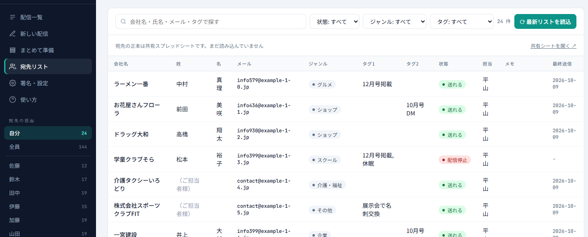
この順に押します
宛先（お客様）の正本は共有スプレッドシートです。追加・変更・削除はシートで行い、サイトの「⟳ 最新リストを読込」で取り込みます。サイトの宛先リストは見るだけです。
- 左の 「宛先の担当」 で、自分／全員／各スタッフの宛先に切り替えられます（最初は自分）。
- 会社名・氏名・メール・タグで探したり、状態（送れる・配信停止・不達）・ジャンル・タグで絞れます。
- 「共有シートを開く ↗」でシートが開きます。
読み込むと「追加・更新・シートから消えた件数」が出ます。メールアドレスの形がおかしい行などは「確認してほしい行」として表示され、その行は取り込まれません。
4配信を作る
動きで見る：件名と本文を書く
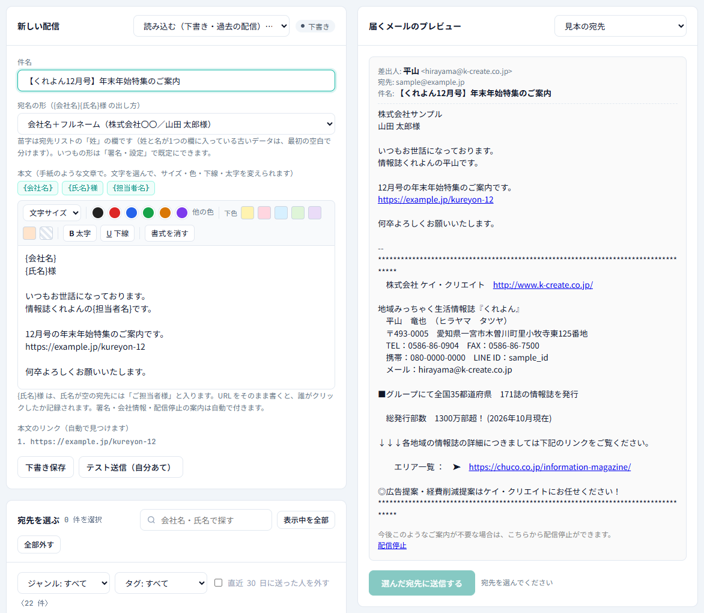
この順に押します
メニューの「新しい配信」か、配信一覧の「＋ 新しい配信」で作ります。右側に届くメールのプレビューが出るので、見ながら書けます。
| 件名 | 100文字まで。 |
|---|---|
| 宛名の形 | {会社名}{氏名}様 の出し方です。「会社名＋フルネーム」「会社名＋苗字」「苗字だけ（会社名なし）」から選びます。いつもの形は「署名・設定」で既定にできます。 |
| 本文 | 手紙のような文章で書きます。文字を選んで、サイズ・文字色・下色（マーカー）・太字・下線を変えられます。「書式を消す」で元に戻ります。貼り付けた文章は文字だけになります。 |
| 差し込み | 上のボタン {会社名} {氏名}様 {担当者名} を押すと、本文に入ります。送るときにお客様ごとの会社名・氏名と、自分の名前に置き換わります。 |
| リンク | 本文に URL をそのまま書くと、誰がクリックしたか記録されます。見つけた URL は「本文のリンク」に出ます。 |
「下書き保存」で途中まで保存できます。「テスト送信（自分あて）」を押すと、自分のアドレスに1通届くので、見え方を確かめてから本番を送ってください。
5宛先を選んで送る
動きで見る：宛先を選んで送る
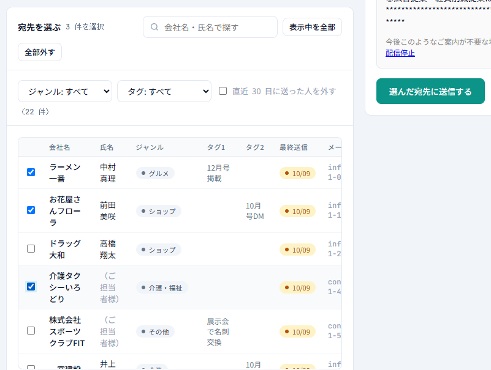
この順に押します
「新しい配信」の下の 「宛先を選ぶ」 で、送る相手にチェックを入れます。出てくるのは自分が担当の、送れる宛先だけです（配信停止・不達は出ません）。
- 会社名・氏名で探す、ジャンル・タグで絞る、「表示中を全部」「全部外す」が使えます。
- 「直近30日に送った人を外す」にチェックすると、最近送った人を選択から外せます。最近送った人は「最終送信」の日付が黄色で出ます。
- 右上の「見本の宛先」を変えると、その人に届く形でプレビューが見られます。
選んだら右の 「選んだ宛先に送信する」 → 確認画面で 「送信する」。30件ずつ順に送られ、進み具合が出ます。終わると結果の画面に移ります。
6開封・クリックを見る
動きで見る：結果を見る
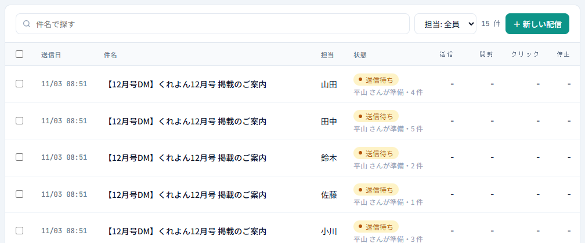
この順に押します
配信一覧で送信済みの行を押すと、結果が見られます。
- 上に、送信・開封した人・クリックした人・配信停止の数。
- 「本文のリンク」：リンクごとに、押した人の数と回数。
- 「宛先ごとの反応」：誰がいつ開いたか、どのリンクを押したか、配信停止したか。「開封した人」「クリックした人」「開いていない人」「送れなかった」で絞れます。
「コピーして新しく作る」で、同じ件名・本文の新しい配信を作れます。
7下書き・過去の配信を使う
動きで見る：下書きの続き・過去の配信を読み込む
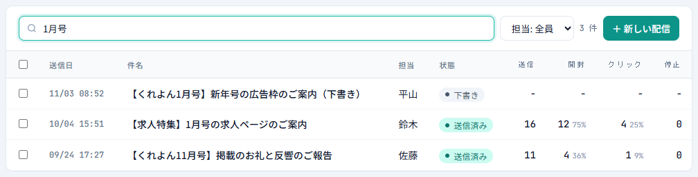
この順に押します
- 配信一覧で下書きの行を押すと、続きを書けます。いらない下書きは「下書きを削除」。
- 「新しい配信」の右上の 「読み込む（下書き・過去の配信）…」 から選ぶと、件名・本文・宛名の形が入ります。自分の下書きは続きとして、送信済みのものはそれを元にした新しい配信として開きます（元の配信は変わりません）。
8まとめて準備
動きで見る：全員分の配信を準備する
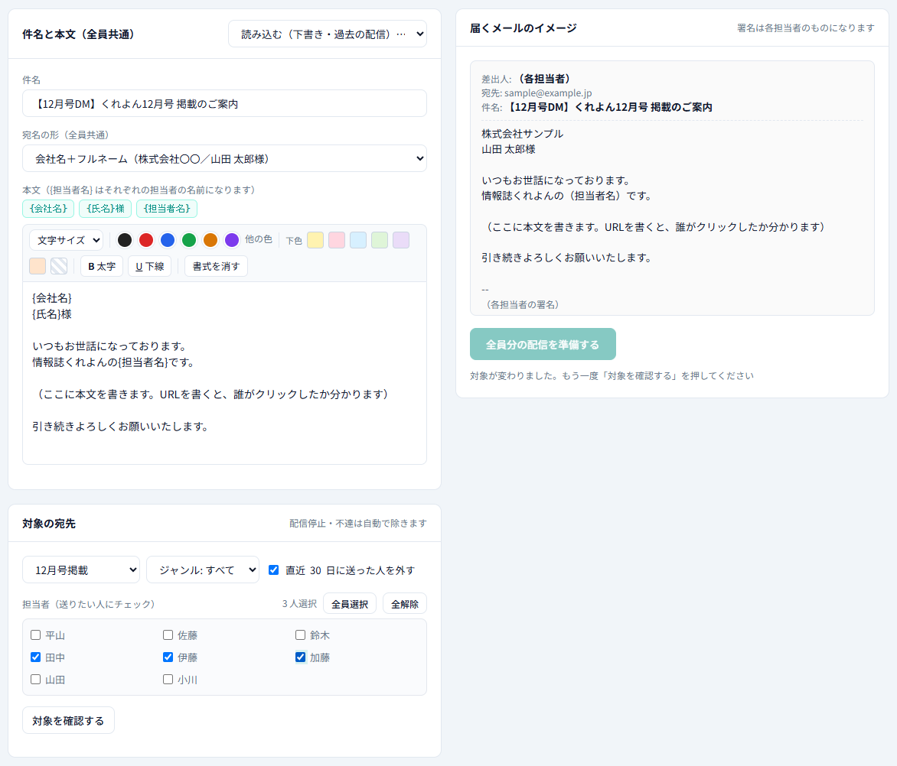
この順に押します
担当者の代わりに、全員分の配信をまとめて用意する機能です（業務サポートなどが使います）。用意した配信は各担当者の配信一覧に 「送信待ち」 として並び、担当者本人のアドレス・名前・署名で送られます。
- 件名と本文を書きます（全員共通。{担当者名} はそれぞれの担当者の名前になります）。
- 対象の宛先をタグ・ジャンルで絞ります。「直近30日に送った人を外す」は最初からオンです。
- 送りたい担当者にチェックを入れます（最初は誰も選ばれていません。「全員選択」「全解除」も使えます）。
- 「対象を確認する」で、担当者ごとの件数と、その人の自動送信がオンかオフかが出ます。
- 「全員分の配信を準備する」 → 確認で OK。この時点では、まだメールは送られません。
9送信待ちを送る・自動送信
動きで見る：送信待ちを送る・自動送信をオンにする
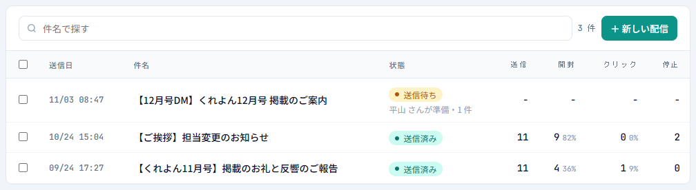
この順に押します
配信一覧に 「送信待ち」 があるときは、他の人があなたの代わりに準備した配信です。行を押すと中身が見られます。
- 「送信する」：あなたのアドレスから送ります。送れるのは担当者本人だけです。
- 「削除（送らない）」：送らずに消します（本人・準備した人・管理者）。
自動送信をオンにする
「署名・設定」の 「自動送信（送信待ちの配信）」 をオンにすると、送信待ちをあなたの操作なしで自動で送ります（1時間ごと・8〜19時）。送ったときは、件名と件数をあなたにメールで知らせます。オンにするのは最初に1回だけです。止めたいときはオフにしてください。
10署名・宛名の形
動きで見る：署名といつもの宛名の形
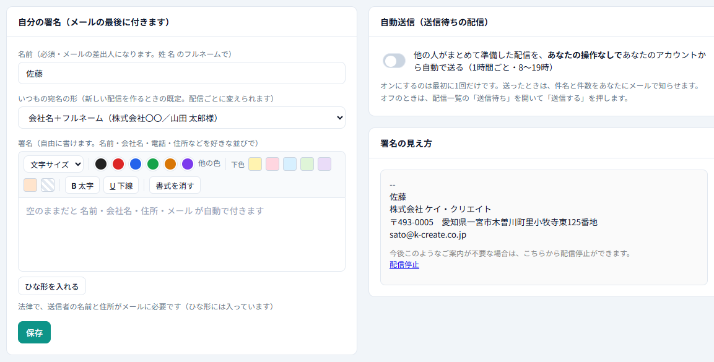
この順に押します
- 名前：メールの差出人になります（必須）。
- いつもの宛名の形：新しい配信を作るときの既定です。配信ごとに変えられます。
- 署名：自由に書けます。本文と同じように文字の色・サイズなども変えられます。「ひな形を入れる」で会社の署名のひな形が入るので、{フリガナ}{携帯}{LINE ID} などの部分を自分のものに書き換えてください。
- 空のままだと、名前・会社名・住所・メールが自動で付きます。右の「署名の見え方」で確かめられます。
11配信一覧の整理
動きで見る：いらない配信を削除する
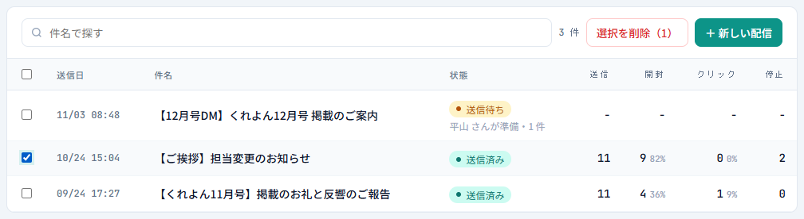
この順に押します
いらなくなった配信は、行の左のチェックを入れて 「選択を削除」 で消せます。見出しのチェックで、表示中を全部選べます。
- 消せるのは自分の配信（管理者は全員の分）と、自分が準備した送信待ちです。送信中は消せません。
- 送信済みを消すと、その配信の送信・開封・クリックの記録は見られなくなります。送ったメールは取り消せません。
件名で探すこともできます。管理者は「担当: 全員」で担当者ごとに絞れます。
12管理者の設定 管理者
動きで見る：他の人の設定を代わりに直す
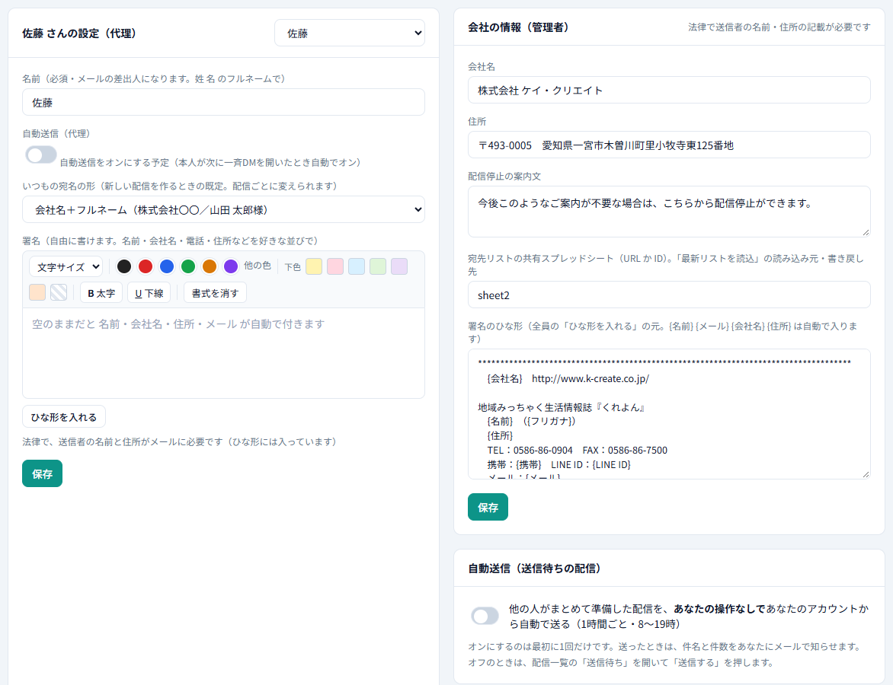
この順に押します
管理者には、配信一覧に全員の配信（担当つき）が出ます。「署名・設定」に 「会社の情報（管理者）」 が出ます。
| 会社名・住所 | 全員のメールの最後に付く送信者の情報です。 |
|---|---|
| 配信停止の案内文 | メールの一番下に付く文です。 |
| 共有スプレッドシート | 宛先リストの正本（「最新リストを読込」の読み込み元・書き戻し先）。URL か ID を入れます。 |
| 署名のひな形 | 全員の「ひな形を入れる」の元です。{名前} {メール} {会社名} {住所} は自動で入ります。 |
他の人の設定を代わりに直す（代理設定）
署名の欄の右上の 「設定する人」 で人を選ぶと、その人の名前・署名・宛名の形を代わりに直せます。「＋ 新しいメンバーを登録」でメンバーを足せます。
- 代理のときは 「自動送信をオンにする予定」 にチェックできます。本人が次に一斉DMを開いたとき、自動送信がオンになります（オフにできるのは本人だけです）。
- 選んだ人の情報を読み込んでいる間は保存できません。同じ名前が別のアカウントにあるときも保存できません（取り違えの防止）。
13スマホで見る
動きで見る：スマホの画面
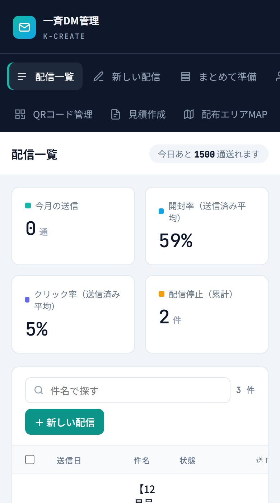
見る場所
スマホでは、メニューが上に横並びになります（横にずらすと全部見えます）。配信一覧の確認や、送信待ちの「送信する」などはスマホでもできます。本文を書くなどの作業は、画面の広いパソコンをおすすめします。
14よくある質問
- 宛名が「ご担当者様」になっています。
- 宛先リストで氏名が空の宛先です。共有シートに姓・名を入れて「⟳ 最新リストを読込」を押すと、次の配信から名前が入ります。
- 「今日の送信上限を超えます」と出ました。
- 1日に送れる数を超えています。宛先を減らすか、明日に分けてください。残りは右上の「今日あと 〇 通送れます」で分かります。
- 送りたい宛先が「宛先を選ぶ」に出てきません。
- 出てくるのは自分が担当の「送れる」宛先だけです。担当者が違う、配信停止・不達になっている、または「直近30日に送った人を外す」で外れている可能性があります。宛先リストで確かめてください。
- お客様から配信停止がありました。
- メールの一番下の「配信停止」から止めた人は、宛先リストを開いたときや送る前に自動で「配信停止」になり、次から送られません。共有シートにも書き戻されます。準備済みの「送信待ち」に入っていた人も、送るときに外されます（結果の画面では「送らず」と出ます）。
- 開封が 0 なのにクリックがあります。
- 画像を止めているメールソフトでは開封が分かりません。クリックは正確に記録されます。
- 新しい機能が出てきません。
- ページを再読み込みしてください。